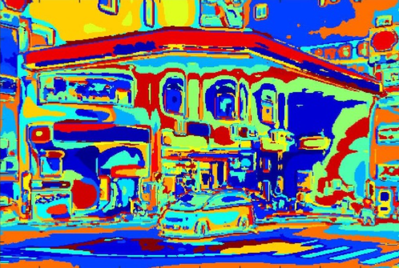

|
|
Single view to 3D- Classical CV [Website]
Aug 2022 - Dec 2022
- Implemented an algorithm to compute the camera matrix P using given 2D-3D point correspondences.
- Developed an algorithm to compute the camera calibration matrix K from a triad of orthogonal vanishing points
- Extended the camera calibration technique by computing the calibration matrix K from images of three squares without making additional assumptions about K.
- Implemented a single-view reconstruction algorithm to generate colored point clouds from a single image.
|
|
|
Single view to 3D- Learning Based [Website]
Jan 23
- Explored loss functions for fitting voxel grids, point clouds, and meshes.
- Trained single view to 3D pipelines for voxel grids, point clouds, and meshes using neural networks, and visualized the input RGB, ground truth 3D representation, and predicted 3D representation.
- Quantitatively compared F1 score of 3D reconstruction for voxel grids, point clouds, and meshes.
- Analyzed the effects of hyperparameter variations and interpreted the learned model by creating visualizations that highlight its behavior.
|
|
|
Epipolar Geometry [Website]
Aug 2022 - Dec 2022
- Implemented 8-point and 7-point algorithms for estimating the fundamental matrix.
- Computed the essential matrix using the estimated fundamental matrix and provided intrinsic matrices.
- Applied RANSAC with both the 7-point and 8-point algorithms to improve the estimation of the fundamental matrix in the presence of noisy correspondences.
- Implemented triangulation to recover 3D points from 2D correspondences and camera matrices.
- Performed bundle adjustment to optimize noisy camera matrices and the 3D structure, refining the quality of the 3D reconstruction.
- Estimated the fundamental matrix on my own images using SIFT feature extraction and RANSAC, showcasing the generalizability.
|
|
|
Structure from Motion [Website]
Aug 2022 - Dec 2022
- Implemented baseline reconstruction using two views, serving as an initialization for the incremental Structure-from-Motion (SfM) pipeline.
- Implemented the incremental Structure-from-Motion (SfM) pipeline using synthetic images with clean 2D keypoint correspondences. Starting from two images with known extrinsics, I incrementally added the other two images to the reconstruction, updating the 3D structure and estimating the extrinsics of the new cameras.
- Utilized COLMAP to run incremental SfM on my own captured multi-view images, resulting in 3D reconstructions of scenes or objects.
|

|
Object Tracking and Motion Detection
Aug 2021 - Dec 2021
- Implemented the Lucas-Kanade optical-flow method to track objects in video sequences, and extended the method to detect and track the motion of multiple objects in a scene.
|
|

|
Image Classification Projects
Aug 2021 - May 2022
- Built a scene-recognition system based on the visual bag-of-words(Spatial Pyramid Matching) approach to classify images into different scenes.
- Developed a classification system by tuning a pre-existing ResNet model to perform multi-class and multi-label classification in PyTorch on Pascal-VOC dataset.
|
|
|
Shape Estimation Using Photometric Stereo
Jan 23
- Developed an implementation of both calibrated and uncalibrated photometric stereo to estimate the shape of an object and scene lighting. Analyzed the potential ambiguity in the estimated shape introduced by the joint estimation process.
|
|
|
Projective Geometry and Homography [Website]
Aug 2022 - Dec 2022
- Gained a solid understanding of the mathematical concepts behind projective geometry and homographiess
- Implemented an algorithm to generate affinely correct warps for images taken with perspective cameras.
- Developed a metric rectification algorithm that generates metrically correct warps for images captured through perspective cameras.
- Implemented an algorithm to estimate homographies between two images using point correspondences.
- Developed an alternative approach to perform metric rectification directly using at least five pairs of perpendicular lines.
|
|
|
Scene Rendering with PyTorch3D [Website]
Jan 2023
- Constructed and rendered various 3D objects, including a tetrahedron and a cube, using custom geometry and textures.
- Explored 3D representations, including point clouds, parametric functions, and implicit surfaces.
- Implemented camera effects like 360-degree renders and Dolly Zoom.
- Re-textured 3D meshes and experimented with camera transformations for visualization.
- Explored sampling points on meshes for generating point clouds with uniform surface sampling.
|
|
|
Volume Rendering and Neural Radiance Fields [Website]
March 2023
- Implemented differentiable renderer for emission-absorption (EA) volumes to optimize scene parameters from image supervision.
- Implemented ray sampling, point sampling, and volume rendering methods to create a complete pipeline for differentiable rendering.
- Implemented an implicit volume as MLP, and used it to optimize a scene from a set of RGB images.
- Explored advanced techniques in NeRF, such as view dependence and high-resolution imagery.
|
|
|
Neural Surfaces [Website]
March 2023
- Designed and trained an MLP-based Neural SDF on point cloud data, and enforced an eikonal regularization.
- Extended the Neural SDF to predict per-point color and implemented VolSDF conversion from SDF to volume density.
- Implemented Phong reflection model for relighting of SDF volume and rendered the model under different lighting conditions.
|
|
|
Weakly Supervised Object Localization
Jan 2022 - May 2022
- Trained object detectors using only image -level annotations by a modifying AlexNet. The network reasoned about locations of the object in the image without bounding-box annotations.
|
{kind=link}